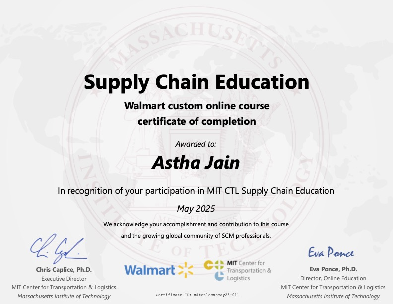
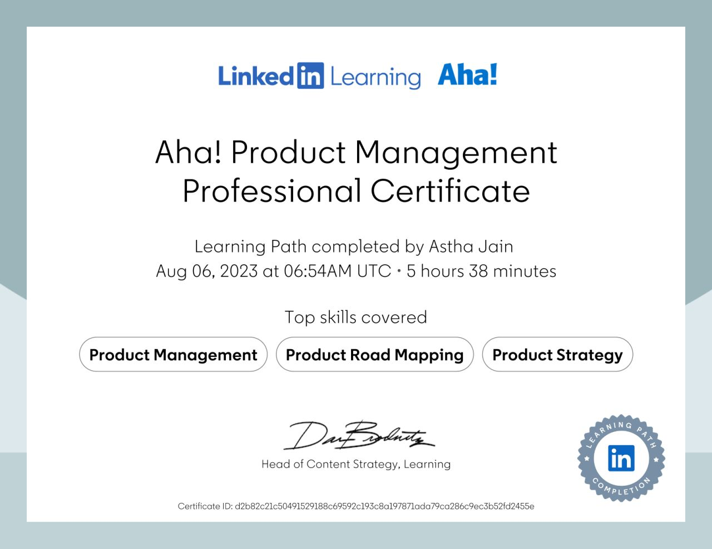

Back-to-School Predictive Planning
$160M excess prevented · $8B portfolio · 3–6mo ahead of base forecast
Supply chain practitioner across automotive, consumer electronics, e-commerce logistics, and large-scale retail. 23 documented stories. 15 live portfolio artifacts. Currently Sr. Manager II, Demand Planning @ Walmart US.
The base ML model operates at weekly grain — smoothing over predictable intraweek demand spikes driven by benefit-issuance cycles. Temporal autocorrelation of residuals confirmed the bias was persistent, not random. Redesigned targeting through store × SKU × day holdout backtesting — diagnosing that 42% of legacy corrections targeted timesteps where on-hand inventory was already sufficient (physically impossible to impact), and that Day-0 interventions drove almost all the value while Day-3+ were actively harmful. Result: 309 bps wMAPE improvement on the pilot population.
My contribution: Owned the business logic, temporal targeting criteria, and backtest design. DS/Engineering owned technical implementation. Turned the finding into the business case for a complete system redesign.
$316M in seasonal demand repositioned across 4 event types — using seasonal time series decomposition (shape vs. magnitude separation), event-study methodology (reindexing history by weeks-to-holiday rather than calendar weeks), and exogenous variable integration (geographic severity signals, substitution clusters). Eliminated 1.5M false-positive event lifts by proving demand followed organic trend, not the holiday.
Reallocated ~$50M of demand to hyper-local markets using spatial-temporal decomposition — breaking a ~$200M national time series into 4 store-level demand drivers (host proximity, team affinity, match tier, daypart), then validating each against historical analog time series (Super Bowl food, prior tournaments). Used staged commitment to update assumptions as early-match actuals arrived.
Prevented ~$50M/month in unnecessary repositioning using a time-series test-control design — comparing demand index trajectories between treated (policy-affected) and matched control stores across 7 deployment waves. Temporal autocorrelation of residuals confirmed no systematic signal; recommendation to hold baseline was maintained under executive pressure to act.
Exposed a 49% intervention win-rate hidden inside strong aggregate metrics on a $3.1B portfolio — after restoring $155M of missed demand — by building intervention-level tracking that turned every correction into evidence, becoming the business case for FOM 3.0.
Captured ~$500K in incremental sales from a fruit population during 6,000+ Walmart rollbacks — building an AI-enabled system that automatically converted elasticity signals into inventory recommendations bounded by lead time, shelf life, and days-of-supply constraints.
Methodology behind driving ~$500M in first-year Bettergoods private-label sales with zero historical data — how to build analog hierarchies, separate demand shape from magnitude, and manage 26-week irreversible import commitments responsibly.
How to prove a production ML model has systematic temporal bias — not just bad predictions. Uses autocorrelation analysis of forecast residuals to distinguish persistent bias (same stores underforecast week after week) from random error. Decomposes to the failure intersection (velocity decile × store cluster) and scopes the minimum viable fix Engineering can ship in weeks, not quarters.
Improved forecast accuracy by ~30% and reduced misrouting costs by ~$150K monthly by building automated RCA dashboards that traced every miss to its exact system failure point — unifying Warehouse Ops, Planning, and Carrier teams on a single causal chain. Captured ~$2M in BFCM incremental sales and ~$15M in merchant drop demand through scenario-based capacity frameworks and pre-defined velocity triggers.
Drove ~7% portfolio revenue growth while reducing E&O by ~$1M through a 17% Gaming demand decline — by running S&OP as a strict decision forum, connecting launch fill, E&O, and expedite costs in one shared view, and directing margin-weighted expediting during global transit disruptions.
Improved launch-week fill rate from ~60% to ~84% on a ~$400M hardware portfolio — directing external ODM manufacturing and regional GTM teams through material schedule mapping without direct authority. Also covers Bettergoods cold-start ($500M yr-1 private label) and PIPO transition modeling.
How to run a room that acts instead of reports — the one rule that changes everything, what must be visible simultaneously (launch fill + E&O + expedite cost), and how to measure whether it's working. Built from running weekly global S&OP across NA, EMEA, and APAC.
Averted ~$35M in production exposure by architecting a supplier risk-identification program across 800+ global suppliers — accelerating bottleneck detection by ~50% (day 16 → day 8) through automated daily scoring. Reduced supplier recovery time from 16 to 6 weeks by diagnosing the exact physical bottleneck before negotiating.
Protected ~$12M+ per launch cycle across 15+ engine lines by developing long-range capital expansion models — tying irreversible tooling investments to demand scenarios 12–24 months ahead. Includes an interactive commitment simulator: adjust demand scenario sliders and see recommended reversible vs. irreversible capacity actions update live.
Every documented story with its headline metric and portfolio artifact. Click any to explore.

